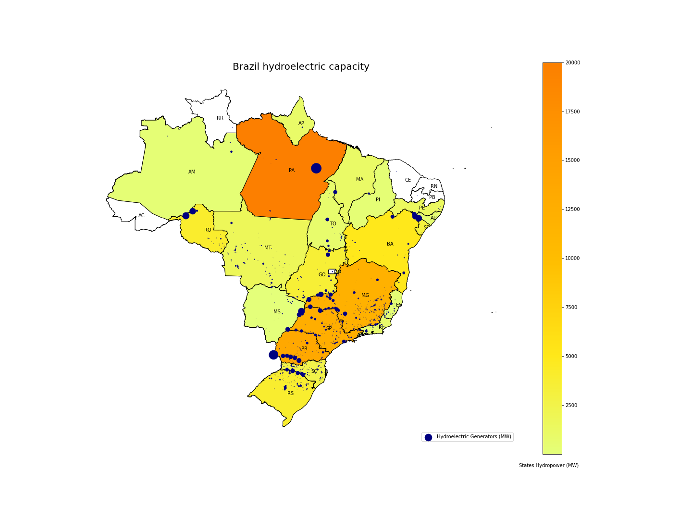
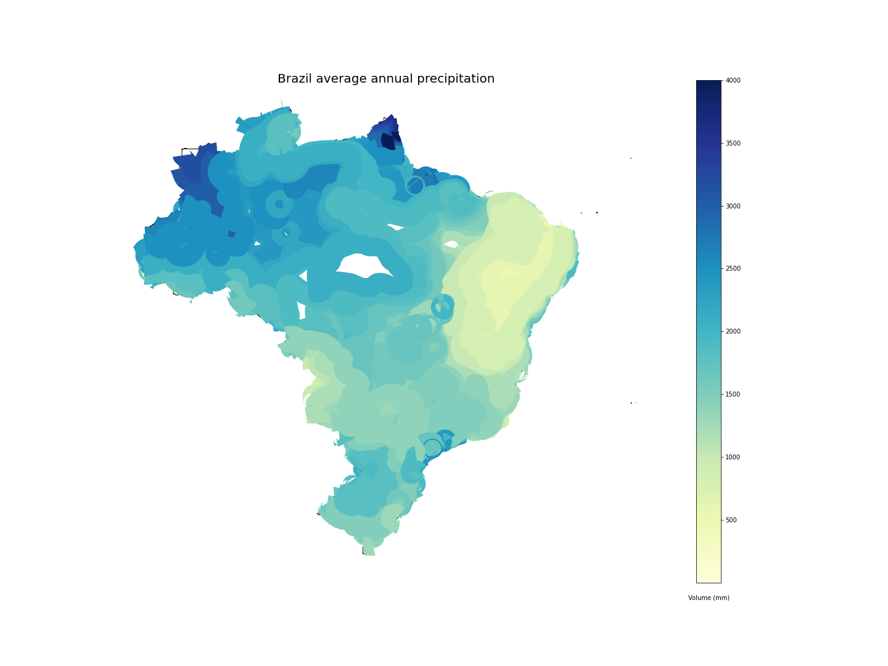

O gráfico de Paretto mostra a composição da matriz enérgetica brasileira, que totaliza 172GW (base 2020). Como pode-se notar, é majoritariamente composta por capacidade hidréletrica, que representa 63% do total. A capacidade instalada hidrelétrica, térmica e eólica correspondem a 88% do total.
Visualização do potencial de geração de energia hidrelétrica por unidade federativa, com base na capacidade das usinas situadas em seu território. O mapa de calor evidencia em laranja, os estados com maior capacidade de produção hidrelétrica. Já os círculos em azul, referenciam através de seus raios, a capacidade de produção de energia de cada hidrelétrica.
Os gráficos mostram a evolução da capacidade instalada em cada subsistema, de 2002 a 2020. Pode-se notar que em todos subsistemas há um grande crescimento da capacidade (de ~1.5 a 4x), e que a região Nordeste é a que mais cresceu em potencial renovável não-hídrico (eólico e solar).
O box plot mostra a distribuição dos preços (PLDs) descontados da inflação (com base em 2002) no período de 2010 a 2020. Pode-se notar que a região Nordeste é a que possui a mediana mais cara neste período.
O gráfico mostra a variação percentual nos PLDs de cada região com relação a 2017, no período de 2017-2020. Pode-se notar que a região nordeste foi a que teve a maior redução relativa no preço, o que provavelmente tem relação com o aumento na matriz renovável da região, já que o custo marginal eólico e solar é nulo.
O gráfico de radar mostra o PLD médio de cada região no período de 2010 a 2020. Pode-se notar que os preços mais caros ocorrem na primavera, em outubro e novembro.
O gráfico de radar mostra a precipitação média de cada região no período de 2010 a 2020. Pode-se notar que na região Norte chove mais qdo que nas demais, na região Sudeste há um período de seca no inverno, e na região Nordeste na primavera.
Análise da concentração média de precipitação anual em território brasileiro, com base nos dados produzidos pelo Serviço Geológico do Brasil (CPRM). A partir do mapa de calor é possível observar as regiões em azul, com intenso volume de chuva, e as áreas em amarelo, onde a chuva é mais escassa.
Essa visualização apresenta uma visão do comportamento entre as curvas de preço e precipitação para cada uma das regiões ao longo dos anos, podemos observar que apesar de existirem comportamentos correlatos, é difícil extrair informações concretas sobre a influência que a precipitação exerce sobre o preço da energia elétrica. Para uma melhor compreensão é necessário observar uma janela temporal diferente da sobreposição simples, tendo em vista que a precipitação pode exercer influência no preço futuro e não no preço presente.
A visualização a seguir apresenta uma análise da correlação temporal que existe entre precipitação e preço, diferente a sobreposição simples, esta abordagem calcula a correlação de pearson com diferentes desvios temporais, sendo que, à esquerda do centro o preço oscila e a precipitação oscila em sequência, e à direita do cetro primeiro temos uma variação na precipitação e em seguida uma variação correlata no preço. Isto apresenta uma visão intuitiva sobre o efeito da chuva com o preço da energia elétrica, tendo em vista que é necessário longos períodos de chuva para que o preço seja influenciado, de modo que os diversos reservatórios tenham tempo de encher, existem casos onde o preço oscila antes da precipitação, isto não é uma relação de causa e efeito direta, contudo a previsão temporal e a especulação do preço podem justificar a alta na correlação.